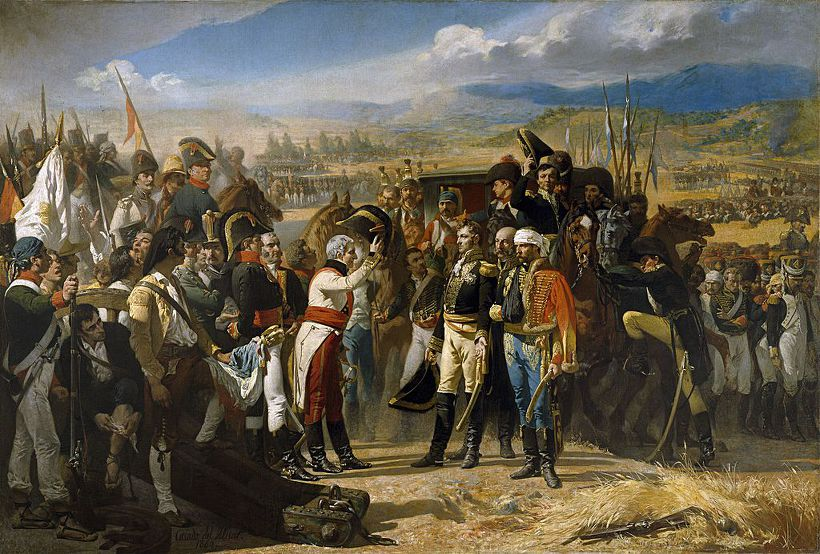
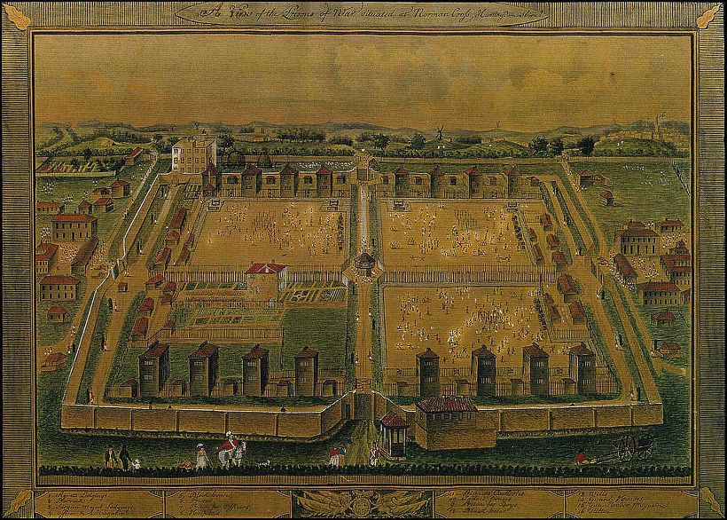
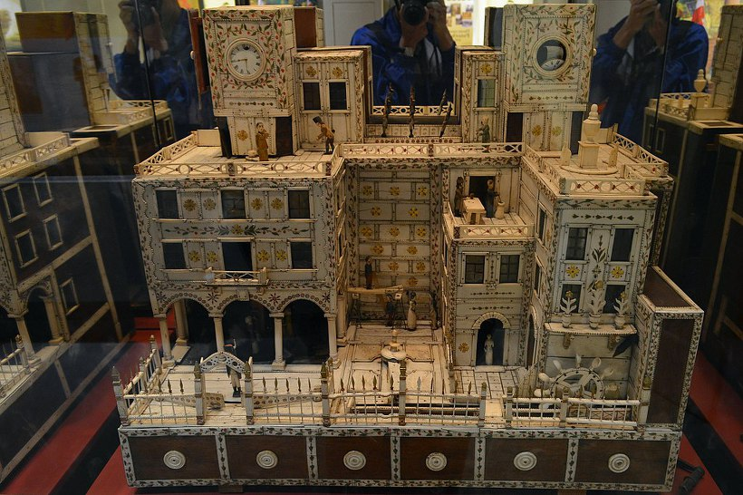
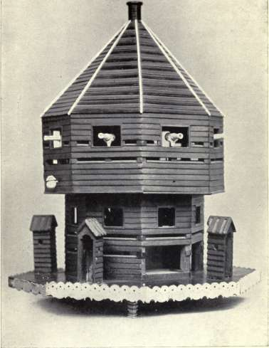
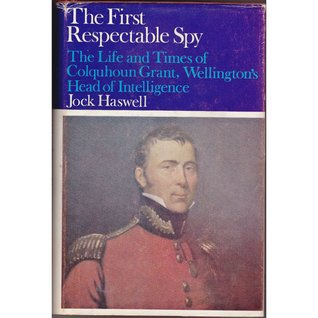

나폴레옹 시대의 포로들은 어떻게 먹고 살았을까
게시: 2018-02-15T13:55:50+09:00
나폴레옹 전쟁 당시에도 포로가 (당연히) 많이 생겼습니다. 동양적, 특히 일본식 사고 방식에서는 싸움에 졌는데 죽지 않고 생포되어 목숨을 구하는 것이 굉장히 치욕적인 일로 받아들여질지는 모르겠습니다만, 유럽에서는 싸우다 사정이 여의치 않을 경우 항복하는 것이 전혀 부끄러운 일이 아니었습니다.
일단 항복이라는 것은 그저 목숨을 구하기 위해 적에게 비굴하게 목숨을 구걸하는 행위가 아니라, 일종의 계약이라고 할 수 있습니다. 당시 항복에는 조건부 항복과 무조건 항복이 있었는데, 일단의 부대가 전장에서, 혹은 지키던 도시나 마을에서 더 이상 싸우는 것이 무의미하다고 판단될 경우 적과 조건부 항복을 논의할 수 있었습니다.
보통 가장 유리한 항복 조건이란 지키고 있던 장소를 적에게 넘겨주는 대신, 항복하는 부대가 무기와 군기를 포함한 모든 짐을 소지한 채로 본국으로 되돌아가는 것이었습니다. 당시 전쟁은 원수를 멸족시키기 위한 감정적 싸움이 아니라, 왕가끼리 또는 국가끼리의 영토 등 이권 다툼을 결정짓기 위한 사업에 가까왔기 때문에, 적을 얼마나 더 죽이느냐가 목표가 아니라 어떤 장소를 빼앗는 것이 목적이었습니다. 따라서 수비군이 이런 조건부 항복을 요청한다면, 공격군 입장에서도 굳이 더 피를 흘릴 이유는 없었습니다. 수비군 입장에서도 병력이나 식량 부족으로 인해 어차피 이기지 못할 전투라면, 애꿎은 병력을 소모시키느니 차라리 다른 곳에 그 병력을 쓰는 것이 더 유리했지요. 항복 조건은 매우 다양했습니다. 대포와 군기는 물론 약탈품까지 모두 챙겨가도록 해주는 경우도 있었고, 소총이나 칼 같은 개인 무기는 가져가되 대포는 두고 가게 만드는 경우도 있었지만, 아예 무장 해제시킨 뒤 몸만 빠져나가도록 해주는 경우도 있었습니다. 또는 장교들만 돌려보내고, 병사들은 포로로 잡아두는 경우도 있었습니다.
나폴레옹의 부하들 중 가장 빛나는(?) 항복을 한 사람은 아마도 앙드레 마세나(Andre Massena)일 것입니다. 1800년 4월부터 6월까지, 그는 수비군보다 거의 3배 많은 오스트리아 포위군을 상대로 이탈리아 북서부 항구도시 제노바(Genova)에서 60일간 끈질긴 저항을 하다 결국 식량 부족으로 항복을 해야 했습니다. 마세나의 수비군이 워낙 치열하고 질긴 방어전을 펼친 덕분에, 그는 항복 협상에서도 우위를 점할 수 있었습니다. 즉 가장 유리한 조건인 군기와 무기를 모두 포함한 짐을 가진 채로 프랑스 영토로 행군해서 돌아가는 조건으로 항복한 것입니다. 특히 마세나가 60일 동안이나 오스트리아의 대군을 제노바에 붙들어 둔 덕분에 나폴레옹이 생-베르나르(Saint Bernard) 고개를 통해 알프스를 넘어 마렝고(Marengo)의 승리를 얻을 수 있었기 때문에, 이 항복은 나폴레옹으로부터도 큰 칭찬을 받았습니다. 심지어 오스트리아군 참모장도, 마렝고 전투의 패배 이후 나폴레옹에게 '당신의 승리는 알레산드리아 앞(마렝고를 지칭)이 아니라 제노바에서 이루어진 것이오'라고 말했다고 합니다.
나폴레옹의 부하 중 가장 치욕적인 항복을 한 장군은 당연코 뒤퐁(Pierre Dupont)입니다. 그는 1808년 7월 스페인 바일렌(Bailen) 전투에서 스페인군에게 군단 전체를 이끌고 항복을 해야 했는데, 그는 항복하면서 지키던 도시를 적에게 넘겨준 것도 아니었고, 또 항복 조건도 상당히 괜찮은 편이었습니다. 당장은 무기를 내려놓아야 했지만, 모든 짐, 심지어 톨레도(Toledo) 등 그동안 뒤퐁 군단이 점령하고 약탈했던 도시들에서 빼앗은 약탈물까지도 그대로 가지고 일단 항구 도시 카디즈(Cadiz)로 간 뒤, 거기서 배편으로 전병력이 프랑스로 귀국하는 것이었거든요. 심지어 내려놓은 무기도, 대포까지 포함해서, 모두 카디즈에서 같은 배편에 실어주기로 약속이 되었습니다. 문제는 스페인군이 약속을 지키지 않았다는 것이었습니다. 스페인군은 카디즈에 도착한 프랑스군에게 배편도 없고 있다고 해도 영국 해군이 프랑스군의 출항을 허락하지 않는다는 이유로 장교들만 귀국을 허락했고, 병사들은 모두 포로로 스페인에 억류했습니다. 이렇게 돌아온 뒤퐁은 나폴레옹에게 엄청난 비난을 받고 투옥되어 나폴레옹 패망 때까지 감옥 생활을 해야 했습니다.

(바일렌에서의 항복... 어느쪽이 프랑스군인지는 굳이 설명 안드려도 아실 겁니다. 특히 스페인 측에는 군복을 입지 않은 민병대원도 포함된 것이 눈에 띄네요.)
이런 조건부 항복 외에도, 무조건 항복을 해야 하는 경우도 물론 많았습니다. 전세가 절대적으로 불리하여 전멸을 앞 둔 경우나, 아예 전장에서 적의 총검이 자신의 목에 겨누어진 상태라면 항복에 조건이 붙을 수 없었지요. 이렇게 항복한 경우에도, 비록 포로 대우에 대한 제네바 협정같은 것은 없었습니다만, 그래도 자칭 신사라고 하는 인간들이 장교 노릇을 하고 있었기 때문에, 일종의 낭만주의 같은 것이 살아있었습니다. 가령 장교가 항복을 할때는, 항복의 표시로서 자신의 검을 뽑아서 상대방 장교에게 전달했습니다. 그러면, 항복을 받아들이는 장교는, 상대방의 명예를 존중하여 그 검을 그대로 가지고 있으라고 허락하는 것이 상식이었습니다. 다만 권총같은 화기는 몰수했습니다. 항복한 장교에 대한 대접도 나쁘지 않았습니다. 항복한 지휘관은 대개 자신을 포로로 잡은 적부대의 장교들과 같은 식탁에서 식사를 하도록 초대를 받았습니다. 프랑스 100년 전쟁때 흑태자 에드워드에게 포로가 된 필립왕이 그날 저녁 흑태자에게 정중한 식사 시중을 받았다는 것은 유명한 이야기입니다.
항복한 장교에게 언제까지나 계속 손님 대접을 해주는 것은 아니었습니다. 항복한 장교는 결국 적국 후방의 포로 수용소로 끌려갔습니다. 프랑스는 포로들을 베르덩 시에 거대한 포로 수용소를 지어놓고 거기에 감금했습니다. 프랑스에 비해 영토가 좁았던 영국은, 항구에 헐크(hulk)라고 하여, 낡은 화물선이나 군함을 해상 교도소로 개조하여, 이곳에 프랑스군 포로들을 수용했습니다. 프랑스에 비해 포로 대접이 영~ 시원찮았던 셈이지요. 영국군들도 이런 곳에 수용되는 프랑스 포로들에 대해 많이 동정했다고 합니다.
물론 장교들과 사병들은 분리 수용되었습니다. 영국뿐만 아니라, 프랑스나 오스트리아에서도, 장교는 신사로서 사회 지배층으로 간주되었지만, 사병들은 글자 그대로 쫄병 취급을 받아 대접이 좋지 않았습니다. 많은 포로들이 열악한 급식과 불결한 주거 환경으로 병사했다고 합니다. 그렇다고 나찌의 유태인 수용소를 생각하는 것은 곤란하고요, 그냥 그럭저럭 먹고 살만 했다고 합니다. 당시 포로들의 사망률은 55명당 1명으로서, 영국 해군의 사망률인 30명당 1명보다 훨씬 낮았습니다.

(나폴레옹 전쟁 당시 영국의 포로 수용소인 노던 크로스의 모습입니다.)
물론 영국도 지상 포로 수용소가 있었습니다. 가장 대표적인 것이 캠브릿지셔(Cambridgeshire)에 있던 노먼 크로스(Norman Cross)라는 포로 수용소였습니다. 여기에는 평균 5천여 명의 프랑스 포로들이 수용되어 있었는데, 이들은 과연 누구 비용으로 먹고 살았을까요 ? 본국이 그 비용을 댔습니다. 영국과 프랑스는 1797년 11월에 협정을 맺고 상대국에 잡혀 있는 자국 포로들에 대해 의복비와 식비를 대주기로 했습니다.
이에 따라 영국이 지급하는 비용으로 프랑스 측에서는 베르덩의 영국 포로들에게 하루 1파인트의 맥주, 8온스의 쇠고기나 생선, 26온스의 빵, 2온스의 치즈, 그리고 1온스의 감자 또는 채소를 제공했습니다. 한달에 1온스의 비누와 1파운드의 담배까지 지급되었지요. 영국인이니까 맥주를 지급하는 것도 좀 특이하게 보이긴 하는데, 홍차는 보이지 않는 것이 이상하지요 ? 홍차는 중국에서 수입하는 비싼 물품이라 그랬습니다. 특별히 환자들에게는 하루 1파인트의 차가 아침과 저녁에 지급되었고, 빵을 16온스로 줄이는 대신 육류나 생선을 16온스로 늘려 지급했습니다. 환자니까 맥주는 뺀 거냐고요 ? 아닙니다. 환자니까 더 맥주를 마셔야 한다고 생각해서, 하루에 2파인트의 맥주를 추가로 지급했습니다. 과연 영국인들답습니다.
반면 영국 노먼 크로스에 수용된 프랑스 포로들에게는 프랑스 측의 비용 부담으로 하루에 1파운드의 쇠고기, 1파운드의 빵, 그리고 1파운드의 감자와 1파운드의 양배추 또는 완두콩이 지급되었습니다. 특히 프랑스 포로 대부분이 카톨릭 신도인 점을 고려하여, 육식이 금지되는 금요일에는 청어나 대구를 쇠고기 대신 지급했습니다.
이렇게 넉넉하게 음식을 지급했는데도 저 노먼 크로스라는 수용소에서는 아사자가 꽤 자주 나왔다고 합니다. 역시 이 비겁한 영길리 간수들이 음식을 빼돌린 것이었을까요 ? 이에 대해 영국군이 감사를 실시했는데, 그 감사 결과 밝혀진 사실은 포로들이 주로 여가를 도박으로 보냈는데, 도박 비용을 마련하기 위해 포로들이 옷가지는 물론 그날그날 배식된 음식까지 팔아넘겼다가 도박에서 홀랑 날리는 바람에 굶어죽는 사람이 속출했다는 것이었습니다. 믿거나 말거나요.
혹시 이렇게 지급되는 음식물을 영국인 요리사가 요리해주었기 때문에 프랑스 사람들 입맛에 맞지 않아 굶어 죽은 것은 아니었을까요 ? 그렇지는 않았습니다. 어차피 포로로 잡히기 전에도 그랬던 것처럼, 포로들은 대략 12인이 1조가 되어 그 중에서 요리사를 뽑아 조별로 요리를 해먹었습니다. 이렇게 요리사 역할을 하는 사람에게는 작으나마 별도의 급여도 지급되었다고 합니다.
잠깐, 급여라고요 ? 예, 포로들도 이런저런 사역을 하거나 심지어 수용소 내에서 사업을 벌여 돈을 벌 수 있었습니다. 특히 포로로 잡히기 전에 사회에서 뭔가 수공업을 하던 병사들은 외부로부터 자재를 들여와 수공예품을 만들어 수용소 외부의 영국인들에게 파는 것도 허용되었습니다. 이런 매매는 2주일에 한번 허용되는 외부 민간 시장으로의 외출시 이루어지거나 또는 수용소 정문에서 매일 이루어졌습니다. 영국군 당국은 포로들의 불우한 처지를 영국 민간인들이 악용하지 못하도록 가격 규제도 두었기 때문에 프랑스군 포로들은 나름 제값을 받고 물건을 팔 수 있었습니다. 그 결과, 어떤 프랑스 포로는 무려 100기니(guinea)의 돈을 모으기도 했다고 합니다. 현재 가치로 대략 2천6백만원 정도입니다.

(노먼 크로스 수용소가 있던 자리에 세워진 피터버로우 Peterborough 박물관에 전시된 포로가 만든 인형의 집입니다.)

(이 사진은 1831년에 촬영된 것인데, 1801년에 어떤 프랑스 포로가 만든 block house, 즉 요새화된 초소 건물의 미니어처입니다. 이런 모형에 대해 당시 1파운드 15실링 6펜스, 지금 가격으로 대략 48만원 정도를 지불한 기록이 있습니다.)
포로들이 돈을 벌어서 무엇에 쓰나요 ? 그런 돈으로 포로들은 와인이나 담배, 또는 추가적인 육류나 음식, 의복 등을 살 수 있었습니다. 본국에서 보내오는 비용은 음식에 대한 것 뿐만 아니라 피복비도 함께 포함되어야 했는데, 프랑스 당국이 영국내 프랑스 포로들의 피복비를 충분히 보내지 않는다고 영국 당국이 불평을 한 기록이 있는 것으로 보아 음식에 비해 피복을 위한 비용은 그다지 충분히 보내지 않았던 모양입니다.
특히 장교들의 경우는 돈이 매우 중요했습니다.
The Surgeon's Mate by Patrick O'Brian (배경: 프랑스, 1813년) ----------------------
루소는 파브르 박사를 배웅하고 돌아왔다. 스티븐이 그에게 말했다.
"우리 식사는 물론 시켜 먹겠네. 문제는 어디에 주문하느냐 하는 건데, 이 신사분은 말이지," 스티븐은 오브리 함장을 가리키며 말했다. "갓 낳은 달걀에, 죽과 쌀 미음(rice-water)을 아주 신선하게 드셔야 하거든. 그리고 난 커피가 뜨거워야 하네."
"문제 없습니다." 루소가 대답했다. "여기서 100 야드도 안 떨어진 곳을 알거든요. 마담 뷰 르이듀는 하루 중 언제라도 요리를 만들고, 또 고급 와인도 제공한답니다."
"그렇다면 그 미망인에게 주문하도록 하지. 이 신사분들에게는 신선한 우유와 보통의 부드러운 빵을, 내게는 커피와 크롸상을 준비해주게. 특히 커피는 강하게 끓여주게."
루소는 이 주문 내용은 듣지도 않고 이미 다른 생각을 하고 있었다. "어떤 고객분들은 봐쟁이나 룰 식당 같은 곳에 주문하기를 바라곤 합지요. 어떤 고객들은 돈을 그냥 창 밖으로 던져 버리더라고요. 제가 뭐 제 사적인 의견을 고객분들에게 강요하는 것은 아닙니다. 저는 절대로 그런 짓은 하지 않거든요. 게다가 취향이라는 건 다 다르쟎습니까... (중략)"
"그럼 마담 르이듀 네로 주문을 보내지." 스티븐이 말했다.
루소는 그대로 자기 말을 계속 했다. "제가 뭐 황제의 식탁같을 거라고 이야기하는 건 아닙니다. 저는 신사분들을 속이지 않아요. 그저 정직한 중산층 요리일 뿐이라구요. 하지만 그 씨베 드 라뼁(Civet de lapin: 레드 와인으로 만든 토끼 스튜, 역주)의 맛은 정말 !... (중략)"
"자, 그럼 마담 르이듀 네로 주문을 보내겠네." 스티븐이 말했다. "우유, 부드러운 빵, 커피, 그리고 크롸상일세. 그리고 특히 커피는 진하게 끓여달라고 부탁해주게."
커피가 왔고, 맛을 보니 주문대로 진했다. 뜨겁고, 진했고, 아주 놀랍도록 향기로왔다. 크롸상은 기름졌으나, 너무 기름지지도 않았다. 아주 정말 멋진 아침 식사였다.
----------------------------------------------------------------------------
자, 저 위의 대화는 어디서 이루어진 대화였을까요 ? 이 글의 제목을 보시면 아시겠지만, 포로로 잡힌 영국 해군 장교들과 프랑스 간수 사이의 대화입니다. 전쟁 포로가 파리 시내의 식당에서 요리를 시켜 먹는다 ? 그럼 돈은 누가 냈을까요 ? 누구긴 누구겠습니까. 먹을 사람이 내야지요. 따라서 똑같은 포로라고 해도, 돈이 있는 장교와 돈이 없는 장교는 생활에 큰 차이가 있었습니다.
위에 인용한 'Surgeon's Mate' 편에서도, 간수가 처음에는 교도소 식사(prison ration)를 하시겠냐, 외부에 시켜드시겠냐고 묻습니다. 포로로 잡힌 일행 중 야기엘로 대위는 돈이 없었던 관계로, '난 교도소 식사를 먹어보겠네'라고 말하는 장면이 나옵니다. 소설 속에서는 스티븐이 '웃기는 소리 하지 말라'며 대신 밥값을 내주지요. 서양 사람들은 그런 것에 철저한 덧치 페이를 한다고 들었는데 꼭 그런 것은 아닌 모양입니다.
당시 장교들이 불편하고 지루한 포로생활을 면하는 데에는 2가지 방법이 있었습니다.
1. 가석방 (parole)
당시는 아직 18세기의 잔재가 진하게 남아있는, 즉 낭만이라는 것이 통하는 시대였습니다. 포로가 된 장교들에게는, 가석방 문서에 서명하라는 제안이 주어졌습니다. 그 문서의 내용은, 자기가 포로가 된 것을 인정하고, 탈출 시도를 하지 않겠다는 서약이었습니다. 이 문서에 서명하면, 그 장교는 감금되지도 않고, 감시도 붙지 않았습니다. 그냥 자유롭게 사는 거지요. 그러자면 뭐가 필요하겠습니까 ? 예, 돈이 필요하지요. 돈이 없으면 감금생활이나 가석방 생활이나 별반 다를 바가 없었겠지요 ? 당시 분위기는 유전(有錢)품위 무전(無錢)망신이었습니다.
대신 그 문서에 서명하면, 전쟁이 끝날 때까지, 혹은 포로 교환이 이루어져 석방될 때까지는 몹시 지루한 생활을 해야 했습니다. 특히 당시 전쟁이 근 20년 가까이 진행되었다는 것을 생각하면, 간단히 서명할 문제는 아니었겠지요.
하지만 분명히 이런 가석방 제도는 귀족 장교들이 편하게 포로생활을 할 수 있게 해주었습니다.
2. 포로 교환
당시에는 적군끼리도 정기적으로 연락장교들이 만나서 포로들의 편지도 교환하고 양쪽 군 지휘관끼리의 공식 문서도 주고 받았습니다. 이때 교환되는 문서 중의 하나가, 양쪽이 서로 붙잡고 있는 포로들의 명단이었습니다. 그중에서 서로 교환할 만한 장교의 이름을 발견하면 '맞바꾸자'라는 제안이 오고 갔습니다. 물론 상응할 만한 계급끼리 교환이 이루어졌지요. 그렇다고 이런 교환이 의무적인 것은 아니었고, 특정인물이 워낙 대단한 인물이거나 또는 악질적인 전범인 경우에는 이런 교환에서 제외되었습니다. 특히 나폴레옹은, 1803년 짧은 휴전 뒤에 다시 전쟁이 시작된 이래 영국에 대해 철천지 원수같은 앙심을 품고 있어서, 영국과는 포로 교환을 거의 하지 않았습니다.
전쟁터에서는 이런저런 피치못할 사정이 많았습니다. 그래서 상대방을 붙잡더라도, 제대로 포로를 후방으로 후송하지 못하는 경우도 종종 있었습니다. 이런 경우, 상대방 장교에게 일종의 '가불' 포로 교환이 제공되는 경우도 있었습니다. 즉, 포로 교환 조건에 따라 먼저 풀어주는 거지요. 대신 가석방의 경우와 마찬가지로, 정식 포로 교환이 이루어지기 전까지는 이 전쟁에서 적국에 대해 무기를 들지 않겠다는 맹세를 해야 했습니다. 상대방이 신사라는 것을 믿고, 상대의 명예를 존중하지 않는다면 있을 수 없는 일이었겠지요.
그러나 이런 것들은 모두 장교들 이야기입니다. 졸병들은 그야말로 짐승처럼 취급받았습니다. 그건 사실 포로가 되기 전, 아군 장교들에게서도 그런 취급을 받았으니까 뭐 별로 다를 바도 없었겠지요. 가장 참혹한 대접을 받은 졸병 포로들은 바로 위에서 언급된, 뒤퐁 휘하에 있다가 포로가 되어 억류된 약 2만명의 프랑스군 병사들이었습니다. 이들은 처음에는 카디즈 항구의 낡은 선박들에 수용되어 수감 생활을 시작했다가 많은 수가 병과 굶주림, 폭동 등으로 죽었고, 그러고도 살아 남은 병사 중 7천명은 결국 지중해 내의 무인도인 카브레(Cabrera) 섬에 수용되었습니다. 사실 이건 수용이 아니라 그냥 무인도에 버리고 간 셈이었습니다. 당시 스페인은 거의 전국토를 프랑스군에게 유린당한 상태라서 포로들에 대한 배급은 커녕 자기 군대조차도 제대로 먹이지 못하는 상황이라서, 이들에 대한 보급은 잊을 만 하면 가끔씩 가서 밀가루 몇 통을 바닷가에 투척하고 가는 정도였고, 이 섬의 프랑스 포로들은 자기들끼리 어떻게든 살아남아야 했습니다. 결국 이 섬에서는 식인 사건까지도 벌어졌다고 하는데, 이들이 구조된 것은 반 이상의 포로들이 죽은 뒤인 1814년 7월 6일이 되어서였습니다. 무려 4년이 넘는 무인도의 기아 생활을 한 뒤였지요. 이들의 비참함에 대해서는 C. S. Forester의 걸작 소설 시리즈인 '혼블로워' 중 짧은 단편인 'HORNBLOWER'S CHARITABLE OFFERING'의 소재가 되었습니다.
그렇다면 2차 세계대전을 배경으로 한 영화 '대탈주'처럼, 포로로 있다가 탈출하여 영웅 대접을 받은 경우가 있었을까요 ? 예, 있었습니다. 그중 가장 유명했던 사람이 그랜트(Colquhoun Grant)라는 영국군 장교였습니다.

이 양반은 EO(Exploring Officer)라고 해서, 정찰 장교였습니다. EO라는 일을 하는 장교는, 요즘으로 따지면 고공 정찰기의 역할을 했습니다. 즉, 적의 후방 지역을 말을 타고 혼자 돌아다니면서 여러가지 정보를 수집하는 역할을 했습니다. 단, 적의 후방이라고 해도, 반드시 군복 정복을 입고 다녀야 했습니다. 그렇게 하지 않을 경우, 붙잡혔을 때 스파이로서 교수형을 당할 수 있었거든요. 그렇게 군복을 입고도 적의 후방에서 체포되지 않고 살아남으려면, 빠른 말이 필수 요건이었습니다. 현대전에서도 정찰기가 적 후방에서 살아남으려면 엄청난 속도로 고공 비행을 해야 하지요 ? 이런 EO들은, 건초를 먹여서 키우지 않고 곡물을 먹여서 키운 말만 탔다고 합니다. 아무래도 곡물을 먹여서 키운 말이 스태미너가 훨씬 좋았나 봅니다. 대개의 기병대원들이 타는 말은 아무래도 값이 싼 풀을 먹었는데, 이런 말들은 곡물을 먹고 자란 말과는 상대가 되지 않았다고 합니다.
그랜트는 나폴레옹 전쟁 당시 스페인에서 활동했는데, 탁월한 기민함과 과감성으로 프랑스군 점령 지역을 헤집고 다니면서 프랑스군의 움직임 파악이나 스페인 빨치산과의 연락 등에 기여했습니다.
특히 그랜트가 유명해진 사건은, 그랜트의 말이 결국 실수를 하여 프랑스군에 체포되었던 건이었습니다. 당시의 관습에 따라, 그랜트는 뭐 그렇게 나쁜 대우를 받지는 않았습니다. 어쨌건간에 영국 군복을 입은 장교였으므로, 그랜트는 포로가 된 장교로서 괜찮은 예우를 받았습니다.
그랜트는 프랑스로 압송된 이후, 파리에서 탈출에 성공합니다. 그는 대담하게도 영국군 군복을 입은 채로, 파리 시내를 몇 주동안 태연히 돌아다녔다고 합니다. 호텔에도 투숙하고, 레스토랑에서 식사도 하고요. 그의 군복이 영국군 전통의 붉은 코트인 것을 보고 의심스러워 하는 프랑스인들에게는, '저는 미국군 장교입니다' 라고 뻥을 치고 돌아다녔는데, 이게 아주 잘 먹혔다고 합니다. 1812년 발발한 미국과 영국간의 전쟁 때문에, 당시 프랑스와 미국은 동맹 관계였거든요.
결국 항구도시인 낭트까지 흘러들어온 그랜트는, 아이러니컬하게도 미국인 선장의 도움을 받아 무사히 영국으로 돌아올 수 있었습니다. 당시 미국과 영국은 전쟁 상태였지만, 같은 앵글로 색슨족인데다 같은 언어를 쓴다는 사실로 인해, 당시에도 개인들 간에는 미국인과 영국인 사이는 그렇게까지 나쁘지는 않았던 것 같습니다.
그랜트에 대해서는 책도 있다고 합니다. 하즈웰(Jock Haswell)이라는 사람이 1969년에 'The First Respectable Spy' 라는 제목으로 이 사람에 대한 책을 썼다는데, 전 못 읽었습니다. Sharpe 시리즈의 작가인 Bernard Cornwell은 읽은 모양입니다. 샤프의 성격이나 모험 중 상당 부분은 이 그랜트의 이야기로부터 따 온 것이라고 합니다.
Source : The Surgeon's Mate by Patrick O'Brian
https://en.wikipedia.org/wiki/Prisoner_of_war
https://historicinterpreter.wordpress.com/2015/08/11/spying-for-the-crown-part-3-military-intelligence-during-the-peninsula-campaign/
https://en.wikipedia.org/wiki/Norman_Cross